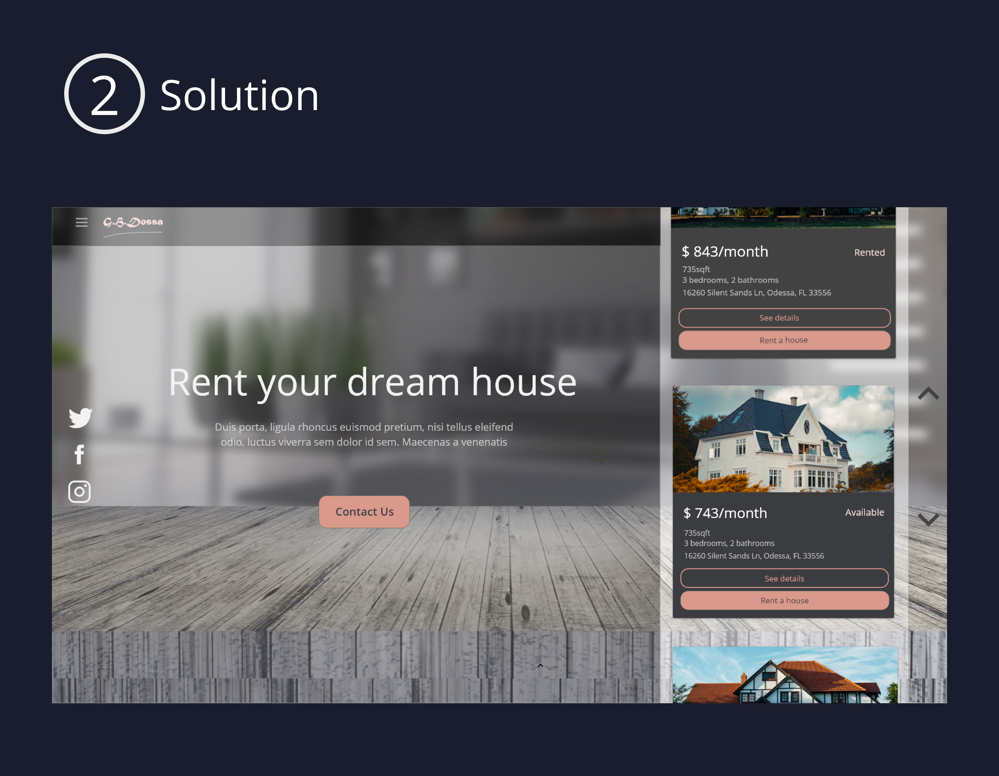
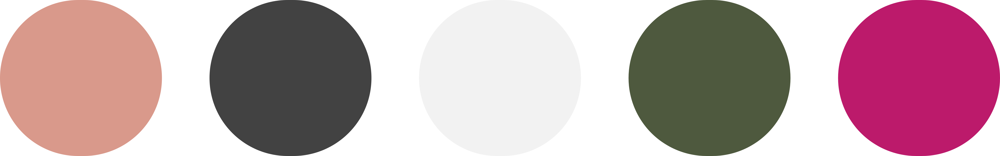
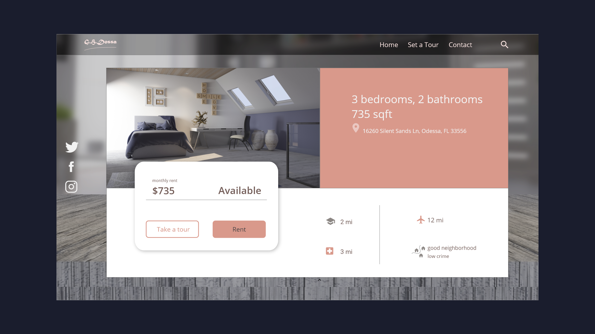
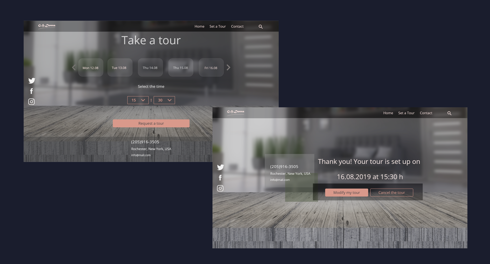
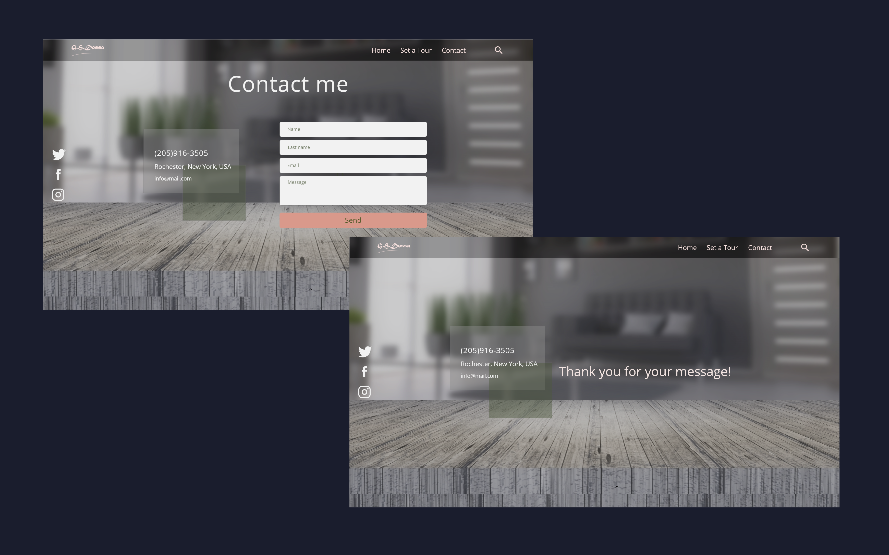

Design a 'rent a house' webpage
This project I got from a friend of mine who has 6 renting houses. He wanted to have a webpage so he can show
all the houses to his clients on one place-his website, unlike now on different rental webpages.
My approach
First thing I did was to do research on the rental pages to see what they look like and how they present the houses. I started sketching and I ended up with 2 solutions for the landigpage. My client likes them both.

The second solution for the web is a little bit different than the first because it's
not made as a regular web page.
It has a simple and clean layout. I decide to show the six houses that are renting as a slider, with cards showing all necessary information.
Since I used minimalistic approach I put the vertical menu instead of the standard top navigation bar to keep the overall design clean and functional.

The palette
is according clients logo and my imagination

Typography
When it comes to typography, I chose the nice clean font for this project - the Open Sans font, designed by Steve Matteson, to keep the overal design modern.
Aa Bb Cc Dd Ee Ff Gg Hh Ii Jj Kk Ll Mm Nn Oo Pp Qq Rr Ss Tt Uu Vv Ww Xx Yy Zz
1, 2, 3, 4, 5, 6, 7, 8, 9, 0
Single page layout
The single page shows the needed information for the house that is renting. I gave a spacious and clean layout & used flat
icons for the basic location information. There are two buttons to navigate to other pages, the rent the house as CTA button or
make a tour as a second ghost button used to make an online appointment to visit the house.

When I started developing the pages I came up with the idea that people usually like to visit the house where they want to live before renting it (exept renting for a vacation). Since people are usually very busy, I came with the idea to make a page to set an appointment to visit the house.
I put an elegant and intuitive way of selecting the date and time, along with the option to modify or even cancel the appointment.

Contact page
The last page is the contact page that gives the option to the clients to write the owner. For this page, I put the attention on the contact form, so there isn't anything else distracting the client.

See next project